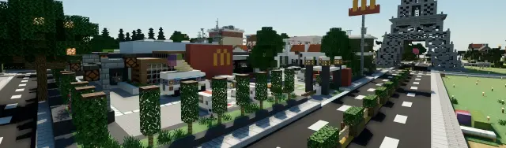
BRTX是一款基岩版魔改光追，《我的世界》基岩版win10端自带的RTX光追，但英伟达的光追是个半成品，效果非常糟糕。通过BE开发者的共同努力，魔改光追BRTX面世，掀翻屎山代码！这个光追效果很不错，推荐大家有条件的话试一试。
视频版：
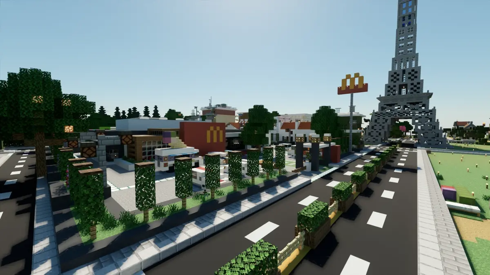
游玩光追前你需要拥有：
我们需要下载三个东西：
作者的项目是https://github.com/ABUCKY0/betterrtx-installer
先从github或者dc上下载作者的改包文件，但考虑到不是所有人都会魔法，所以我会在评论区提供懒人包，但不能保证是最新版本
然后下载IObit Unlocker，链接是https://www.iobit.com/en/iobit-unlocker.php
官网下载较慢，可以从懒人包获取
最后我们选择一个光追纹理包，推荐defined PBR和kelly's RTX两款光追纹理包，这俩纹理包内容比较全，而且他们参与了BRTX的制作，肯定兼容好
改包方法类似于渲染龙改包，你也可以依据此教程魔改光影，区显红显夜视啥的
推荐各位使用1.19最新的一些MC版本，1.18的BRTX会有部分渲染bug
建议改包前备份自己的存档避免出现意外事故
我们的基岩版包体默认位于C:\Program Files\WindowsApps
如果你使用了第三方启动器，请找到第三方启动器MC包体的位置
你会在里面看到Microsoft.MinecraftUWP字样的文件夹，点击文件夹
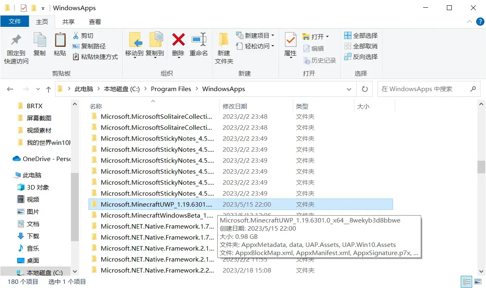
继续点击\data\renderer\materials
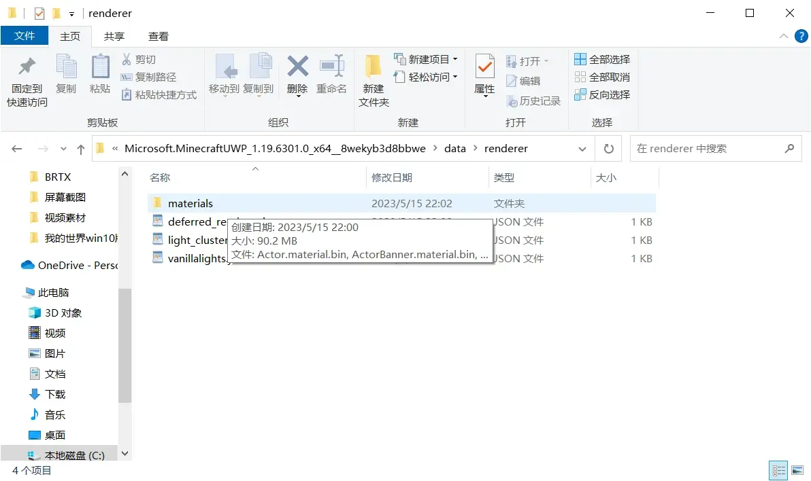
这些文件会因为文件权限问题而无法直接删除（第三方启动器除外），需要用到IObit Unlocker辅助修改
找到这两个文件（以后BRTX可能会更新，然后改更多文件，反正就是把需要替换的文件先删除）
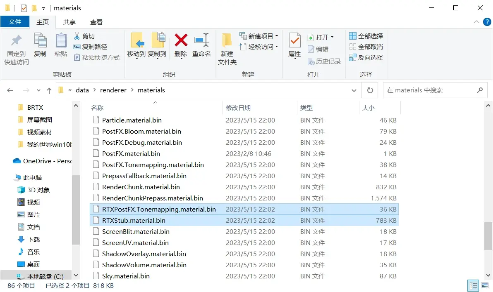
解压并打开IObit Unlocker的.exe文件，将选取的两个文件拖入中间白框中，点击解锁右侧的箭头，选择解锁&删除
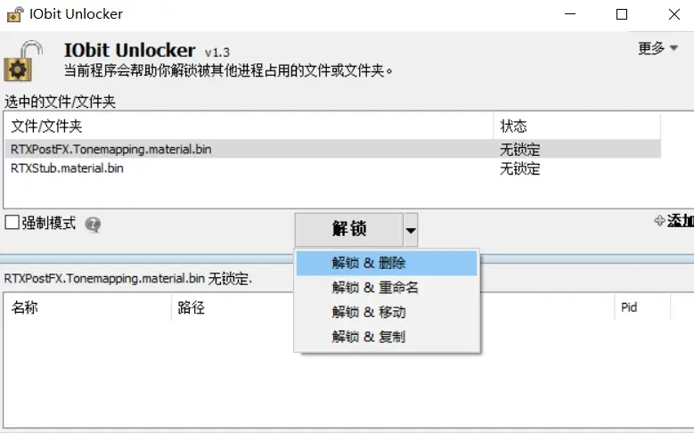
再把BRTX的改包文件拖入IObit Unlocker，BRTX我更喜欢景深版和kelly版，可以自行选择
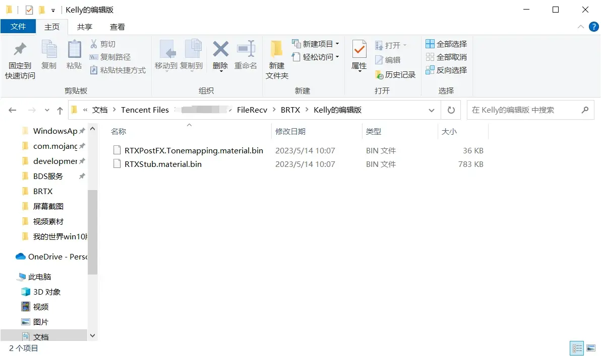
但这次我们选择解锁&复制，复制到material文件夹里面，点击确定
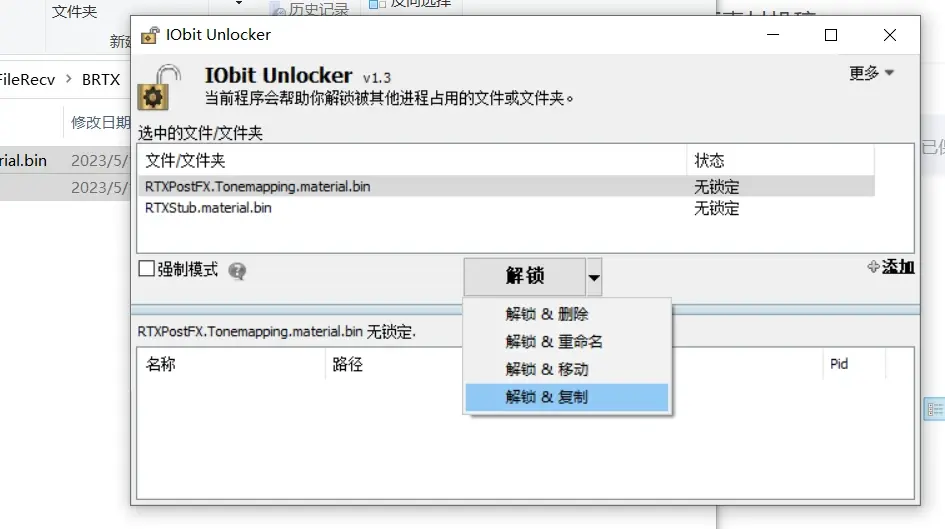
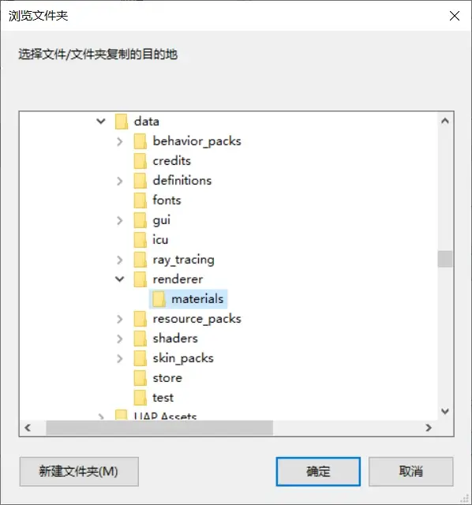
以上流程也适用于win10端延迟渲染以及YSSRD等光影的注入，方法一样
接下来导入RTX光追纹理包，win10端双击即可导入，如果你有preview版需要选择一下打开方式，在全局或地图中启用光追纹理包
基岩版光线追踪按住键盘的；分号键即可开启/关闭光追，非常方便，也能在视频设置中修改
另外，可以加载clear water纹理包，让水变得更干净哦
BRTX加入了动态模糊和景深，修复了原版众多的bug，支持了观察者模式，还添加了雨天反射和带角度的日月光等，非常赞！
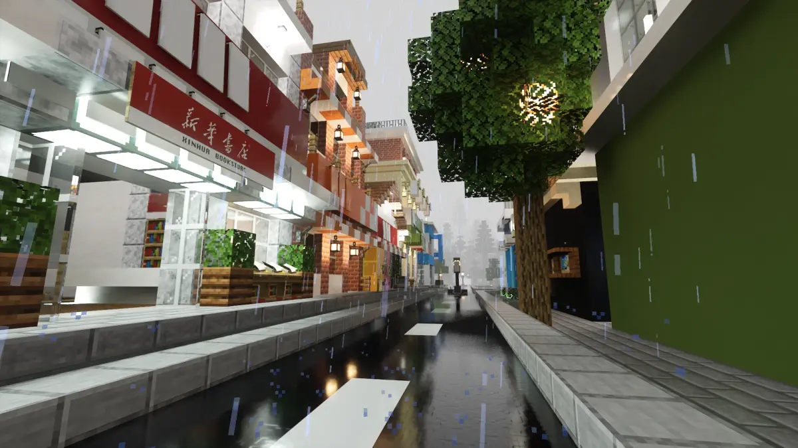
好了，大家打开启用光追的地图就可以享受BRTX的美好啦！祝大家玩的愉快！
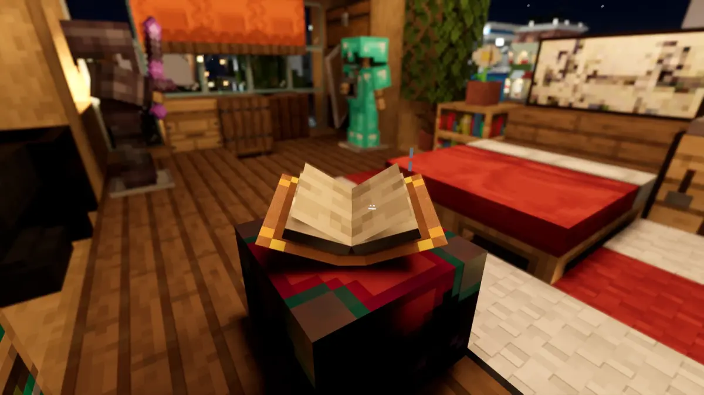